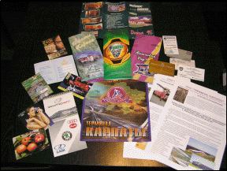
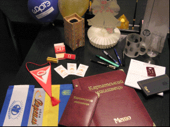
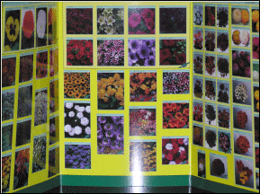
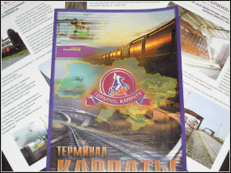
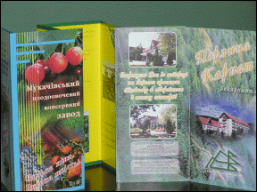
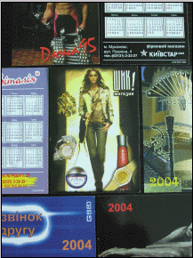

|
На головну |
Розділ "Поліграфія"
Важливим напрямком у роботі РА "КРІС" є поліграфія в усіх її формах, а саме:
виготовлення листівок, візитівок, плакатів, буклетів, відкриток, папок, меню, прапорів, календарів різних видів, флаєрів і воблерів, сувенірної продукції.






|